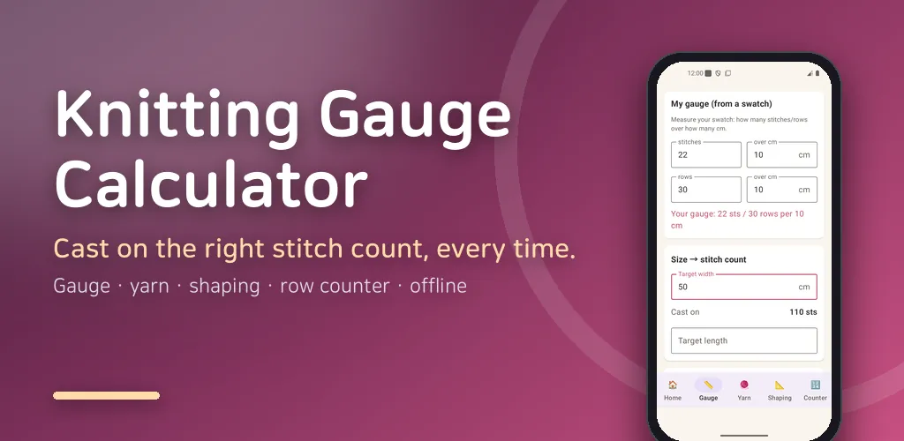
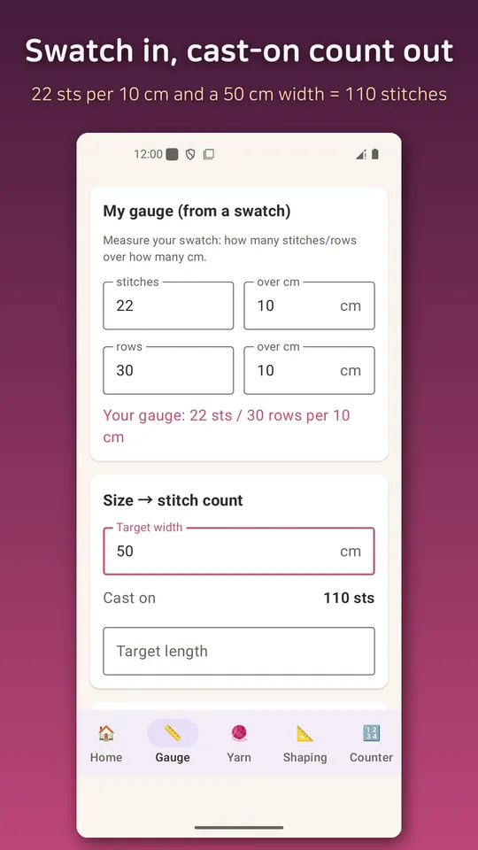
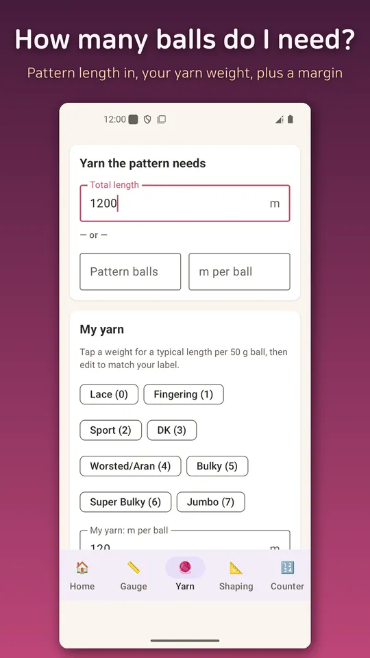
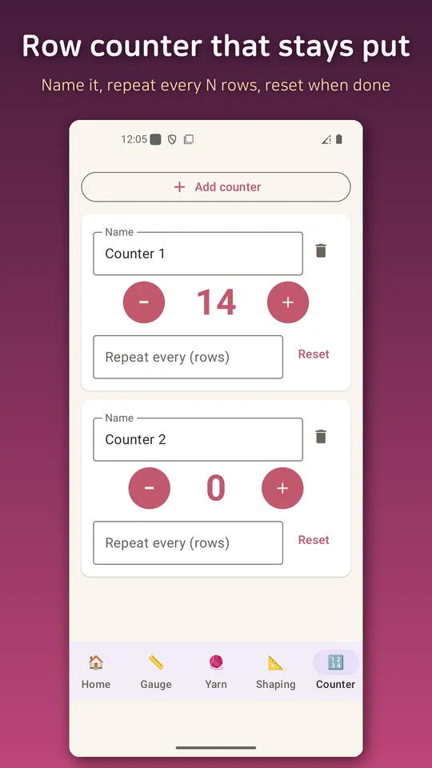
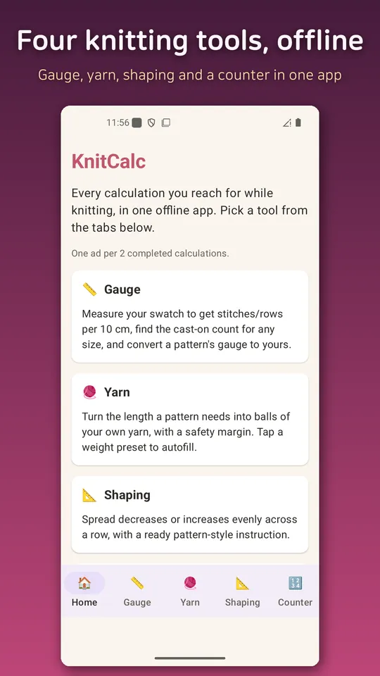

Knitting Calculator: KnitCalc
Knitting gauge, yarn estimate, even shaping and row counters, all offline.





About this app
Every calculation you reach for while knitting, in one offline app. No account, no server.
- Gauge — measure your swatch, get stitches/rows per 10 cm, and the cast-on count for any size. Convert a pattern written for a different gauge to yours.
- Yarn estimate — convert the length a pattern needs into balls of your own yarn, with a safety margin. Weight presets from lace to jumbo.
- Shaping — turn "from N to M stitches" into an even, pattern-style instruction (e.g. [K2, k2tog] × 30).
- Row counters — several at once, with repeat tracking. The screen stays on while you knit.
Note: yardage varies by yarn — always check your label. Results are guideline values.
Android · free with ads · Developer: RealTunaLove · Store listing in 17 languages